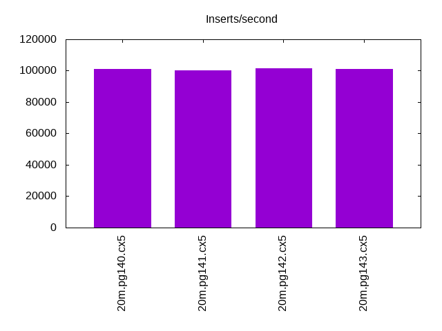
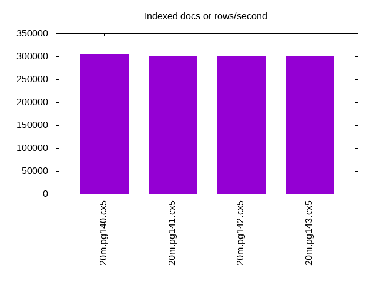
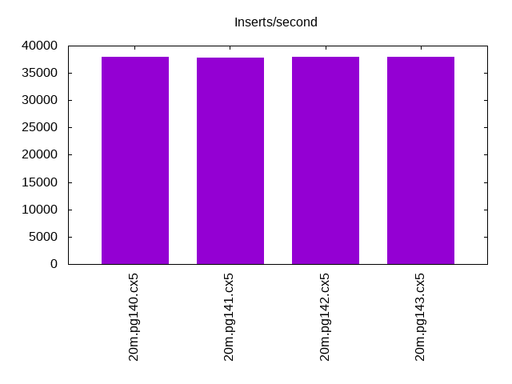
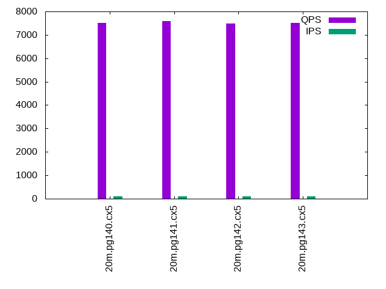
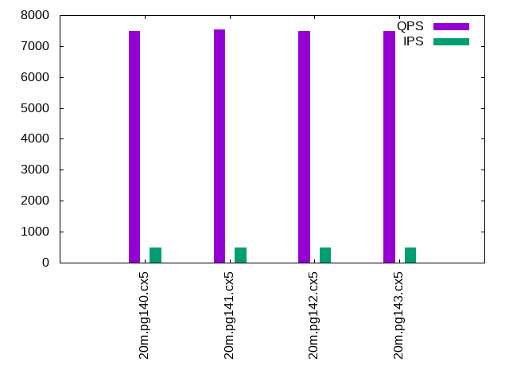
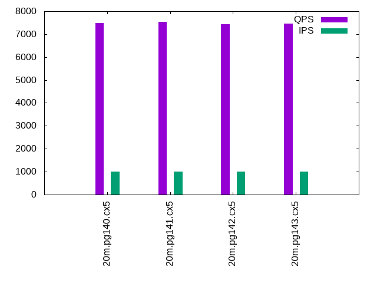

This is a report for the insert benchmark with 20M docs and 1 client(s). It is generated by scripts (bash, awk, sed) and Tufte might not be impressed. An overview of the insert benchmark is here and a short update is here. Below, by DBMS, I mean DBMS+version.config. An example is my8020.c10b40 where my means MySQL, 8020 is version 8.0.20 and c10b40 is the name for the configuration file.
The test server is an Intel NUC with 4 cores, 16G RAM and a Samsung 970 EVO. More details are here. Clients and the DBMS share one server. The per-database configs are in the per-database subdirectories here.
The tested DBMS are:
The numbers are inserts/s for l.i0 and l.i1, indexed docs (or rows) /s for l.x and queries/s for q*.2. The values are the average rate over the entire test for inserts (IPS) and queries (QPS). The range of values for IPS and QPS is split into 3 parts: bottom 25%, middle 50%, top 25%. Values in the bottom 25% have a red background, values in the top 25% have a green background and values in the middle have no color. A gray background is used for values that can be ignored because the DBMS did not sustain the target insert rate. Red backgrounds are not used when the minimum value is within 80% of the max value.
| dbms | l.i0 | l.x | l.i1 | q100.1 | q500.1 | q1000.1 |
|---|---|---|---|---|---|---|
| 20m.pg140.cx5 | 101010 | 304545 | 37951 | 7509 | 7498 | 7491 |
| 20m.pg141.cx5 | 100000 | 300000 | 37736 | 7586 | 7542 | 7526 |
| 20m.pg142.cx5 | 101523 | 300000 | 37951 | 7482 | 7479 | 7424 |
| 20m.pg143.cx5 | 101010 | 300000 | 37951 | 7508 | 7497 | 7467 |
This lists the average rate of inserts/s for the tests that do inserts concurrent with queries. For such tests the query rate is listed in the table above. The read+write tests are setup so that the insert rate should match the target rate every second. Cells that are not at least 95% of the target have a red background to indicate a failure to satisfy the target.
| dbms | q100.1 | q500.1 | q1000.1 |
|---|---|---|---|
| pg140.cx5 | 100 | 500 | 999 |
| pg141.cx5 | 100 | 499 | 999 |
| pg142.cx5 | 100 | 500 | 999 |
| pg143.cx5 | 100 | 499 | 999 |
| target | 100 | 500 | 1000 |
l.i0: load without secondary indexes. Graphs for performance per 1-second interval are here.
Average throughput:
Insert response time histogram: each cell has the percentage of responses that take <= the time in the header and max is the max response time in seconds. For the max column values in the top 25% of the range have a red background and in the bottom 25% of the range have a green background. The red background is not used when the min value is within 80% of the max value.
| dbms | 256us | 1ms | 4ms | 16ms | 64ms | 256ms | 1s | 4s | 16s | gt | max |
|---|---|---|---|---|---|---|---|---|---|---|---|
| pg140.cx5 | 85.585 | 14.415 | 0.001 | 0.005 | |||||||
| pg141.cx5 | 78.752 | 21.246 | 0.002 | 0.006 | |||||||
| pg142.cx5 | 87.804 | 12.194 | 0.002 | 0.006 | |||||||
| pg143.cx5 | 80.902 | 19.098 | 0.003 |
Performance metrics for the DBMS listed above. Some are normalized by throughput, others are not. Legend for results is here.
ips qps rps rmbps wps wmbps rpq rkbpq wpi wkbpi csps cpups cspq cpupq dbgb1 dbgb2 rss maxop p50 p99 tag 101010 0 0 0.0 64.7 42.3 0.000 0.000 0.001 0.429 12275 42.1 0.122 17 1.9 5.2 0.0 0.005 101392 82110 20m.pg140.cx5 100000 0 0 0.0 66.5 43.1 0.000 0.000 0.001 0.442 12158 44.7 0.122 18 1.9 5.2 0.0 0.006 100591 89889 20m.pg141.cx5 101523 0 0 0.0 66.3 42.8 0.000 0.000 0.001 0.431 12314 42.6 0.121 17 1.9 5.2 0.0 0.006 101790 82112 20m.pg142.cx5 101010 0 0 0.0 65.7 42.9 0.000 0.000 0.001 0.435 12258 43.0 0.121 17 1.9 5.2 0.0 0.003 101284 82135 20m.pg143.cx5
l.x: create secondary indexes.
Average throughput:
Performance metrics for the DBMS listed above. Some are normalized by throughput, others are not. Legend for results is here.
ips qps rps rmbps wps wmbps rpq rkbpq wpi wkbpi csps cpups cspq cpupq dbgb1 dbgb2 rss maxop p50 p99 tag 304545 0 0 0.0 64.1 67.7 0.000 0.000 0.000 0.228 1986 25.0 0.007 3 3.7 8.6 0.0 0.002 NA NA 20m.pg140.cx5 300000 0 0 0.0 59.9 63.4 0.000 0.000 0.000 0.216 1888 24.7 0.006 3 3.7 8.6 0.0 0.002 NA NA 20m.pg141.cx5 300000 0 0 0.0 59.2 62.1 0.000 0.000 0.000 0.212 1949 24.8 0.006 3 3.7 8.6 0.0 0.002 NA NA 20m.pg142.cx5 300000 0 0 0.0 57.8 61.6 0.000 0.000 0.000 0.210 1896 25.0 0.006 3 3.7 8.6 0.0 0.002 NA NA 20m.pg143.cx5
l.i1: continue load after secondary indexes created. Graphs for performance per 1-second interval are here.
Average throughput:
Insert response time histogram: each cell has the percentage of responses that take <= the time in the header and max is the max response time in seconds. For the max column values in the top 25% of the range have a red background and in the bottom 25% of the range have a green background. The red background is not used when the min value is within 80% of the max value.
| dbms | 256us | 1ms | 4ms | 16ms | 64ms | 256ms | 1s | 4s | 16s | gt | max |
|---|---|---|---|---|---|---|---|---|---|---|---|
| pg140.cx5 | 99.844 | 0.126 | 0.028 | 0.001 | nonzero | 1.295 | |||||
| pg141.cx5 | 99.826 | 0.142 | 0.029 | 0.002 | 0.001 | 0.383 | |||||
| pg142.cx5 | 99.850 | 0.121 | 0.028 | 0.002 | nonzero | 0.485 | |||||
| pg143.cx5 | 99.855 | 0.115 | 0.029 | 0.001 | nonzero | 0.336 |
Performance metrics for the DBMS listed above. Some are normalized by throughput, others are not. Legend for results is here.
ips qps rps rmbps wps wmbps rpq rkbpq wpi wkbpi csps cpups cspq cpupq dbgb1 dbgb2 rss maxop p50 p99 tag 37951 0 0 0.0 155.7 63.6 0.000 0.000 0.004 1.715 9569 36.1 0.252 38 8.2 20.8 0.0 1.295 39571 9488 20m.pg140.cx5 37736 0 0 0.0 154.8 63.6 0.000 0.000 0.004 1.725 9527 36.1 0.252 38 8.2 20.8 0.0 0.383 39507 11485 20m.pg141.cx5 37951 0 0 0.0 155.8 63.9 0.000 0.000 0.004 1.723 9578 36.0 0.252 38 8.2 20.8 0.0 0.485 39624 12248 20m.pg142.cx5 37951 0 0 0.0 154.1 63.6 0.000 0.000 0.004 1.715 9572 35.9 0.252 38 8.2 20.8 0.0 0.336 39607 12848 20m.pg143.cx5
q100.1: range queries with 100 insert/s per client. Graphs for performance per 1-second interval are here.
Average throughput:
Query response time histogram: each cell has the percentage of responses that take <= the time in the header and max is the max response time in seconds. For max values in the top 25% of the range have a red background and in the bottom 25% of the range have a green background. The red background is not used when the min value is within 80% of the max value.
| dbms | 256us | 1ms | 4ms | 16ms | 64ms | 256ms | 1s | 4s | 16s | gt | max |
|---|---|---|---|---|---|---|---|---|---|---|---|
| pg140.cx5 | 99.945 | 0.054 | 0.001 | nonzero | 0.005 | ||||||
| pg141.cx5 | 99.948 | 0.051 | 0.001 | 0.003 | |||||||
| pg142.cx5 | 99.940 | 0.059 | 0.001 | 0.003 | |||||||
| pg143.cx5 | 99.937 | 0.062 | 0.001 | 0.003 |
Insert response time histogram: each cell has the percentage of responses that take <= the time in the header and max is the max response time in seconds. For max values in the top 25% of the range have a red background and in the bottom 25% of the range have a green background. The red background is not used when the min value is within 80% of the max value.
| dbms | 256us | 1ms | 4ms | 16ms | 64ms | 256ms | 1s | 4s | 16s | gt | max |
|---|---|---|---|---|---|---|---|---|---|---|---|
| pg140.cx5 | 99.979 | 0.021 | 0.005 | ||||||||
| pg141.cx5 | 99.986 | 0.014 | 0.005 | ||||||||
| pg142.cx5 | 99.986 | 0.014 | 0.005 | ||||||||
| pg143.cx5 | 99.979 | 0.021 | 0.005 |
Performance metrics for the DBMS listed above. Some are normalized by throughput, others are not. Legend for results is here.
ips qps rps rmbps wps wmbps rpq rkbpq wpi wkbpi csps cpups cspq cpupq dbgb1 dbgb2 rss maxop p50 p99 tag 100 7509 0 0.0 197.1 4.4 0.000 0.000 1.973 44.726 28883 26.3 3.847 140 8.3 10.8 0.0 0.005 7512 7368 20m.pg140.cx5 100 7586 0 0.0 197.0 4.3 0.000 0.000 1.974 44.626 29176 26.1 3.846 138 8.3 10.8 0.0 0.003 7592 7480 20m.pg141.cx5 100 7482 0 0.0 197.4 4.4 0.000 0.000 1.976 44.597 28779 26.2 3.846 140 8.3 10.8 0.0 0.003 7480 7336 20m.pg142.cx5 100 7508 0 0.0 197.1 4.4 0.000 0.000 1.975 44.699 28894 26.3 3.849 140 8.3 10.8 0.0 0.003 7512 7368 20m.pg143.cx5
q500.1: range queries with 500 insert/s per client. Graphs for performance per 1-second interval are here.
Average throughput:
Query response time histogram: each cell has the percentage of responses that take <= the time in the header and max is the max response time in seconds. For max values in the top 25% of the range have a red background and in the bottom 25% of the range have a green background. The red background is not used when the min value is within 80% of the max value.
| dbms | 256us | 1ms | 4ms | 16ms | 64ms | 256ms | 1s | 4s | 16s | gt | max |
|---|---|---|---|---|---|---|---|---|---|---|---|
| pg140.cx5 | 99.895 | 0.098 | 0.007 | nonzero | 0.007 | ||||||
| pg141.cx5 | 99.901 | 0.092 | 0.007 | nonzero | 0.006 | ||||||
| pg142.cx5 | 99.897 | 0.097 | 0.007 | nonzero | 0.006 | ||||||
| pg143.cx5 | 99.887 | 0.106 | 0.007 | nonzero | 0.005 |
Insert response time histogram: each cell has the percentage of responses that take <= the time in the header and max is the max response time in seconds. For max values in the top 25% of the range have a red background and in the bottom 25% of the range have a green background. The red background is not used when the min value is within 80% of the max value.
| dbms | 256us | 1ms | 4ms | 16ms | 64ms | 256ms | 1s | 4s | 16s | gt | max |
|---|---|---|---|---|---|---|---|---|---|---|---|
| pg140.cx5 | 99.990 | 0.010 | 0.008 | ||||||||
| pg141.cx5 | 99.987 | 0.013 | 0.007 | ||||||||
| pg142.cx5 | 99.976 | 0.024 | 0.008 | ||||||||
| pg143.cx5 | 99.987 | 0.013 | 0.016 |
Performance metrics for the DBMS listed above. Some are normalized by throughput, others are not. Legend for results is here.
ips qps rps rmbps wps wmbps rpq rkbpq wpi wkbpi csps cpups cspq cpupq dbgb1 dbgb2 rss maxop p50 p99 tag 500 7498 0 0.0 376.5 12.4 0.000 0.000 0.754 25.404 28954 26.6 3.861 142 9.7 13.3 0.0 0.007 7498 7352 20m.pg140.cx5 499 7542 0 0.0 376.4 12.4 0.000 0.000 0.754 25.400 29124 26.6 3.861 141 9.7 13.3 0.0 0.006 7544 7432 20m.pg141.cx5 500 7479 0 0.0 376.8 12.4 0.000 0.000 0.754 25.402 28879 26.6 3.861 142 9.7 13.3 0.0 0.006 7480 7336 20m.pg142.cx5 499 7497 0 0.0 376.6 12.4 0.000 0.000 0.754 25.414 28957 26.7 3.862 142 9.7 13.3 0.0 0.005 7498 7368 20m.pg143.cx5
q1000.1: range queries with 1000 insert/s per client. Graphs for performance per 1-second interval are here.
Average throughput:
Query response time histogram: each cell has the percentage of responses that take <= the time in the header and max is the max response time in seconds. For max values in the top 25% of the range have a red background and in the bottom 25% of the range have a green background. The red background is not used when the min value is within 80% of the max value.
| dbms | 256us | 1ms | 4ms | 16ms | 64ms | 256ms | 1s | 4s | 16s | gt | max |
|---|---|---|---|---|---|---|---|---|---|---|---|
| pg140.cx5 | 99.841 | 0.144 | 0.014 | nonzero | 0.008 | ||||||
| pg141.cx5 | 99.846 | 0.139 | 0.015 | nonzero | 0.011 | ||||||
| pg142.cx5 | 99.835 | 0.151 | 0.015 | nonzero | 0.007 | ||||||
| pg143.cx5 | 99.830 | 0.156 | 0.014 | nonzero | 0.007 |
Insert response time histogram: each cell has the percentage of responses that take <= the time in the header and max is the max response time in seconds. For max values in the top 25% of the range have a red background and in the bottom 25% of the range have a green background. The red background is not used when the min value is within 80% of the max value.
| dbms | 256us | 1ms | 4ms | 16ms | 64ms | 256ms | 1s | 4s | 16s | gt | max |
|---|---|---|---|---|---|---|---|---|---|---|---|
| pg140.cx5 | 98.272 | 1.719 | 0.010 | 0.036 | |||||||
| pg141.cx5 | 98.223 | 1.767 | 0.010 | 0.035 | |||||||
| pg142.cx5 | 98.258 | 1.726 | 0.015 | 0.036 | |||||||
| pg143.cx5 | 98.199 | 1.790 | 0.010 | 0.035 |
Performance metrics for the DBMS listed above. Some are normalized by throughput, others are not. Legend for results is here.
ips qps rps rmbps wps wmbps rpq rkbpq wpi wkbpi csps cpups cspq cpupq dbgb1 dbgb2 rss maxop p50 p99 tag 999 7491 7 0.1 513.4 17.5 0.001 0.008 0.514 17.943 29050 27.2 3.878 145 12.0 16.7 0.0 0.008 7496 7352 20m.pg140.cx5 999 7526 7 0.1 513.1 17.5 0.001 0.008 0.514 17.939 29184 27.2 3.878 145 12.0 16.7 0.0 0.011 7528 7389 20m.pg141.cx5 999 7424 7 0.1 513.1 17.5 0.001 0.008 0.514 17.931 28787 27.1 3.878 146 12.0 16.7 0.0 0.007 7432 7272 20m.pg142.cx5 999 7467 7 0.1 512.9 17.5 0.001 0.008 0.513 17.943 28955 27.2 3.878 146 12.0 16.7 0.0 0.007 7480 7320 20m.pg143.cx5
l.i0: load without secondary indexes
Performance metrics for all DBMS, not just the ones listed above. Some are normalized by throughput, others are not. Legend for results is here.
ips qps rps rmbps wps wmbps rpq rkbpq wpi wkbpi csps cpups cspq cpupq dbgb1 dbgb2 rss maxop p50 p99 tag 101010 0 0 0.0 64.7 42.3 0.000 0.000 0.001 0.429 12275 42.1 0.122 17 1.9 5.2 0.0 0.005 101392 82110 20m.pg140.cx5 100000 0 0 0.0 66.5 43.1 0.000 0.000 0.001 0.442 12158 44.7 0.122 18 1.9 5.2 0.0 0.006 100591 89889 20m.pg141.cx5 101523 0 0 0.0 66.3 42.8 0.000 0.000 0.001 0.431 12314 42.6 0.121 17 1.9 5.2 0.0 0.006 101790 82112 20m.pg142.cx5 101010 0 0 0.0 65.7 42.9 0.000 0.000 0.001 0.435 12258 43.0 0.121 17 1.9 5.2 0.0 0.003 101284 82135 20m.pg143.cx5
l.x: create secondary indexes
Performance metrics for all DBMS, not just the ones listed above. Some are normalized by throughput, others are not. Legend for results is here.
ips qps rps rmbps wps wmbps rpq rkbpq wpi wkbpi csps cpups cspq cpupq dbgb1 dbgb2 rss maxop p50 p99 tag 304545 0 0 0.0 64.1 67.7 0.000 0.000 0.000 0.228 1986 25.0 0.007 3 3.7 8.6 0.0 0.002 NA NA 20m.pg140.cx5 300000 0 0 0.0 59.9 63.4 0.000 0.000 0.000 0.216 1888 24.7 0.006 3 3.7 8.6 0.0 0.002 NA NA 20m.pg141.cx5 300000 0 0 0.0 59.2 62.1 0.000 0.000 0.000 0.212 1949 24.8 0.006 3 3.7 8.6 0.0 0.002 NA NA 20m.pg142.cx5 300000 0 0 0.0 57.8 61.6 0.000 0.000 0.000 0.210 1896 25.0 0.006 3 3.7 8.6 0.0 0.002 NA NA 20m.pg143.cx5
l.i1: continue load after secondary indexes created
Performance metrics for all DBMS, not just the ones listed above. Some are normalized by throughput, others are not. Legend for results is here.
ips qps rps rmbps wps wmbps rpq rkbpq wpi wkbpi csps cpups cspq cpupq dbgb1 dbgb2 rss maxop p50 p99 tag 37951 0 0 0.0 155.7 63.6 0.000 0.000 0.004 1.715 9569 36.1 0.252 38 8.2 20.8 0.0 1.295 39571 9488 20m.pg140.cx5 37736 0 0 0.0 154.8 63.6 0.000 0.000 0.004 1.725 9527 36.1 0.252 38 8.2 20.8 0.0 0.383 39507 11485 20m.pg141.cx5 37951 0 0 0.0 155.8 63.9 0.000 0.000 0.004 1.723 9578 36.0 0.252 38 8.2 20.8 0.0 0.485 39624 12248 20m.pg142.cx5 37951 0 0 0.0 154.1 63.6 0.000 0.000 0.004 1.715 9572 35.9 0.252 38 8.2 20.8 0.0 0.336 39607 12848 20m.pg143.cx5
q100.1: range queries with 100 insert/s per client
Performance metrics for all DBMS, not just the ones listed above. Some are normalized by throughput, others are not. Legend for results is here.
ips qps rps rmbps wps wmbps rpq rkbpq wpi wkbpi csps cpups cspq cpupq dbgb1 dbgb2 rss maxop p50 p99 tag 100 7509 0 0.0 197.1 4.4 0.000 0.000 1.973 44.726 28883 26.3 3.847 140 8.3 10.8 0.0 0.005 7512 7368 20m.pg140.cx5 100 7586 0 0.0 197.0 4.3 0.000 0.000 1.974 44.626 29176 26.1 3.846 138 8.3 10.8 0.0 0.003 7592 7480 20m.pg141.cx5 100 7482 0 0.0 197.4 4.4 0.000 0.000 1.976 44.597 28779 26.2 3.846 140 8.3 10.8 0.0 0.003 7480 7336 20m.pg142.cx5 100 7508 0 0.0 197.1 4.4 0.000 0.000 1.975 44.699 28894 26.3 3.849 140 8.3 10.8 0.0 0.003 7512 7368 20m.pg143.cx5
q500.1: range queries with 500 insert/s per client
Performance metrics for all DBMS, not just the ones listed above. Some are normalized by throughput, others are not. Legend for results is here.
ips qps rps rmbps wps wmbps rpq rkbpq wpi wkbpi csps cpups cspq cpupq dbgb1 dbgb2 rss maxop p50 p99 tag 500 7498 0 0.0 376.5 12.4 0.000 0.000 0.754 25.404 28954 26.6 3.861 142 9.7 13.3 0.0 0.007 7498 7352 20m.pg140.cx5 499 7542 0 0.0 376.4 12.4 0.000 0.000 0.754 25.400 29124 26.6 3.861 141 9.7 13.3 0.0 0.006 7544 7432 20m.pg141.cx5 500 7479 0 0.0 376.8 12.4 0.000 0.000 0.754 25.402 28879 26.6 3.861 142 9.7 13.3 0.0 0.006 7480 7336 20m.pg142.cx5 499 7497 0 0.0 376.6 12.4 0.000 0.000 0.754 25.414 28957 26.7 3.862 142 9.7 13.3 0.0 0.005 7498 7368 20m.pg143.cx5
q1000.1: range queries with 1000 insert/s per client
Performance metrics for all DBMS, not just the ones listed above. Some are normalized by throughput, others are not. Legend for results is here.
ips qps rps rmbps wps wmbps rpq rkbpq wpi wkbpi csps cpups cspq cpupq dbgb1 dbgb2 rss maxop p50 p99 tag 999 7491 7 0.1 513.4 17.5 0.001 0.008 0.514 17.943 29050 27.2 3.878 145 12.0 16.7 0.0 0.008 7496 7352 20m.pg140.cx5 999 7526 7 0.1 513.1 17.5 0.001 0.008 0.514 17.939 29184 27.2 3.878 145 12.0 16.7 0.0 0.011 7528 7389 20m.pg141.cx5 999 7424 7 0.1 513.1 17.5 0.001 0.008 0.514 17.931 28787 27.1 3.878 146 12.0 16.7 0.0 0.007 7432 7272 20m.pg142.cx5 999 7467 7 0.1 512.9 17.5 0.001 0.008 0.513 17.943 28955 27.2 3.878 146 12.0 16.7 0.0 0.007 7480 7320 20m.pg143.cx5
Insert response time histogram
256us 1ms 4ms 16ms 64ms 256ms 1s 4s 16s gt max tag 0.000 85.585 14.415 0.001 0.000 0.000 0.000 0.000 0.000 0.000 0.005 pg140.cx5 0.000 78.752 21.246 0.002 0.000 0.000 0.000 0.000 0.000 0.000 0.006 pg141.cx5 0.000 87.804 12.194 0.002 0.000 0.000 0.000 0.000 0.000 0.000 0.006 pg142.cx5 0.000 80.902 19.098 0.000 0.000 0.000 0.000 0.000 0.000 0.000 0.003 pg143.cx5
TODO - determine whether there is data for create index response time
Insert response time histogram
256us 1ms 4ms 16ms 64ms 256ms 1s 4s 16s gt max tag 0.000 0.000 99.844 0.126 0.028 0.001 0.000 nonzero 0.000 0.000 1.295 pg140.cx5 0.000 0.000 99.826 0.142 0.029 0.002 0.001 0.000 0.000 0.000 0.383 pg141.cx5 0.000 0.000 99.850 0.121 0.028 0.002 nonzero 0.000 0.000 0.000 0.485 pg142.cx5 0.000 0.000 99.855 0.115 0.029 0.001 nonzero 0.000 0.000 0.000 0.336 pg143.cx5
Query response time histogram
256us 1ms 4ms 16ms 64ms 256ms 1s 4s 16s gt max tag 99.945 0.054 0.001 nonzero 0.000 0.000 0.000 0.000 0.000 0.000 0.005 pg140.cx5 99.948 0.051 0.001 0.000 0.000 0.000 0.000 0.000 0.000 0.000 0.003 pg141.cx5 99.940 0.059 0.001 0.000 0.000 0.000 0.000 0.000 0.000 0.000 0.003 pg142.cx5 99.937 0.062 0.001 0.000 0.000 0.000 0.000 0.000 0.000 0.000 0.003 pg143.cx5
Insert response time histogram
256us 1ms 4ms 16ms 64ms 256ms 1s 4s 16s gt max tag 0.000 0.000 99.979 0.021 0.000 0.000 0.000 0.000 0.000 0.000 0.005 pg140.cx5 0.000 0.000 99.986 0.014 0.000 0.000 0.000 0.000 0.000 0.000 0.005 pg141.cx5 0.000 0.000 99.986 0.014 0.000 0.000 0.000 0.000 0.000 0.000 0.005 pg142.cx5 0.000 0.000 99.979 0.021 0.000 0.000 0.000 0.000 0.000 0.000 0.005 pg143.cx5
Query response time histogram
256us 1ms 4ms 16ms 64ms 256ms 1s 4s 16s gt max tag 99.895 0.098 0.007 nonzero 0.000 0.000 0.000 0.000 0.000 0.000 0.007 pg140.cx5 99.901 0.092 0.007 nonzero 0.000 0.000 0.000 0.000 0.000 0.000 0.006 pg141.cx5 99.897 0.097 0.007 nonzero 0.000 0.000 0.000 0.000 0.000 0.000 0.006 pg142.cx5 99.887 0.106 0.007 nonzero 0.000 0.000 0.000 0.000 0.000 0.000 0.005 pg143.cx5
Insert response time histogram
256us 1ms 4ms 16ms 64ms 256ms 1s 4s 16s gt max tag 0.000 0.000 99.990 0.010 0.000 0.000 0.000 0.000 0.000 0.000 0.008 pg140.cx5 0.000 0.000 99.987 0.013 0.000 0.000 0.000 0.000 0.000 0.000 0.007 pg141.cx5 0.000 0.000 99.976 0.024 0.000 0.000 0.000 0.000 0.000 0.000 0.008 pg142.cx5 0.000 0.000 99.987 0.013 0.000 0.000 0.000 0.000 0.000 0.000 0.016 pg143.cx5
Query response time histogram
256us 1ms 4ms 16ms 64ms 256ms 1s 4s 16s gt max tag 99.841 0.144 0.014 nonzero 0.000 0.000 0.000 0.000 0.000 0.000 0.008 pg140.cx5 99.846 0.139 0.015 nonzero 0.000 0.000 0.000 0.000 0.000 0.000 0.011 pg141.cx5 99.835 0.151 0.015 nonzero 0.000 0.000 0.000 0.000 0.000 0.000 0.007 pg142.cx5 99.830 0.156 0.014 nonzero 0.000 0.000 0.000 0.000 0.000 0.000 0.007 pg143.cx5
Insert response time histogram
256us 1ms 4ms 16ms 64ms 256ms 1s 4s 16s gt max tag 0.000 0.000 98.272 1.719 0.010 0.000 0.000 0.000 0.000 0.000 0.036 pg140.cx5 0.000 0.000 98.223 1.767 0.010 0.000 0.000 0.000 0.000 0.000 0.035 pg141.cx5 0.000 0.000 98.258 1.726 0.015 0.000 0.000 0.000 0.000 0.000 0.036 pg142.cx5 0.000 0.000 98.199 1.790 0.010 0.000 0.000 0.000 0.000 0.000 0.035 pg143.cx5